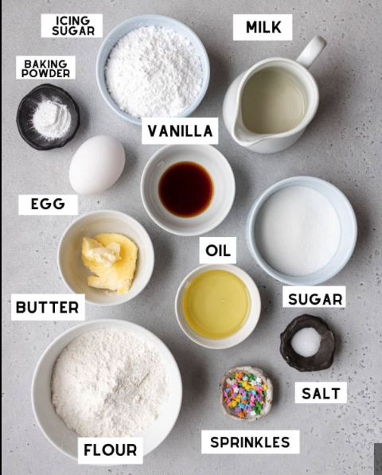

I have seen this a lot on Instagram: "How the fuck we went from throwing rocks at each other to turning sand to chips. So, I had to figure this out, if another human can know this and breath oxygen, it's probably a fair fight to figure it out. I'm not saying it's not complex but you probably can do complex things as hard as chip fabrication already, somethign with some instruction following, I don't know, have you ever baked a cacke? You can compare baking to fabing, maybe? Ok you know what, fuck it we are going to compare baking cake to making chips! Hopefully, this comparison gives you enough meta data so you remember the process of chip fabrication like making cakes, and if you don't like cakes or this comparison, fuck you.
You start baking a cake by preparing the ingredients: 1. flour, 2. baking powder 3. salt 4. butter 5. sugar 6. eggs 7. vanilla extract 8. milk Now for chip fabrication you need: 1. silicon wafers 2. photoresists (positive & negative) 3. dopants () 4. etching chemicals 5. oxidation materials 6. metallization materials 7. dielectric materials 8. chemical-mechanical polishing (CMP) slurries 9. deposition materials 10. lithography masks 11. cleaning chemicals 12. protective coatings 13. packaging materials
Ok, let me give you some image:
Cake:
Chip: